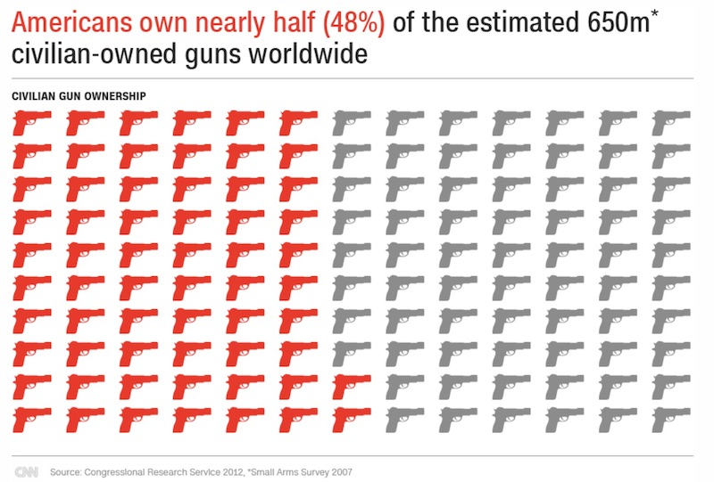

The gun problem in the United States is out of control, and beyond repair
Last year was the worst year on record for deaths caused by guns in America. With so many people campaigning for reform, the question of what can be done is more prevalent than ever. The answer is not a promising one.
According to the gun violence archive, there were 61,358 gun related incidents in the US during 2017 alone. 15,554 of these resulted in death. Both of these figures have risen steadily per year since 2014, with 2017 being the highest on record. Gun homicide rates are 25.2 times higher in the US than in other high-income countries and there were 344 mass shootings in 2017 alone. These statistics have become a worrying norm, and their impact is diminished because of their continued frequency.
After the Las Vegas shooting (deadliest modern shooting in US history) when 59 people were killed and 441 more were injured, Sen. Chris Murphy (D) of Connecticut, tweeted: “It’s time for Congress to get off it’s a—and do something. … To my colleagues: Your cowardice to act cannot be whitewashed by thoughts and prayers”. But how exactly does one tackle such a complicated issue? The grim conclusion… you can’t.
The American Constitution is codified. The rights and civil liberties afforded to citizens are written in one document. The alternative to this is an uncodified constitution, where the fundamental rules are spread through a variety of legal statutes and instruments. The rights within a codified Constitution are entrenched, meaning they are extremely difficult to amend. In the United States, a Constitutional amendment can only be made with a super-majority (2/3 of the vote) in both the House and the Senate.
This ensures that the civil liberties of the people are heavily protected. However, it makes necessary amendments incredibly hard to make. Assuming that a bill proposing an amendment made it to the floor of Congress, it would require a 2/3 majority in both houses to be passed, and then must be ratified by 3/4 of state legislatures. The bill cannot be changed, it must be ratified in its original wording.
The statistics show this is incredibly unlikely. 33 constitutional amendments have been adopted by both houses of Congress since 1789. Of those, only 27 have been ratified. Approximately 11,539 measures to amend the constitution have been proposed in Congress meaning that only 0.2% have become a valid part of the constitution.
Statistically speaking, the chances of amending the 2nd amendment are microscopic. The process has drawn heavy criticism from many, including documentarian and political activist Michael Moore, who claimed “we view our constitution as if it was written by god himself”.
The blame cannot be solely attributed to the Constitution though. Why aren’t bills on gun-control getting past Congress? Surely politicians know that the current system isn’t working? Especially after 1,334 mass shootings in the last 4 years?
The main reason none of these bills make it past Congress is the NRA (National Rifle Association). It has over 5 million members and officially spends $3m a year on directly lobbying gun policy. This is only the recorded contributions to law makers and considerable sums are spent via PACs (Political Action Committees) to influence policy and fund campaigns of politicians willing to toe the line.
In 2014, the NRA gave $769,662 to Republican Congressional candidates, which dwarfs the $40,800 they gave to Democrat candidates. Their politically engaged membership is another giant pull factor for Congressional candidates, as they are likely to vote for whoever promotes their 2nd Amendment right.
Chris Michael, of Every Town for Gun Safety, feels the NRA “have blood on their hands”. “Every time there is a mass shooting, the NRA are there, immediately after, twisting the tragedy to promote their own agenda. They brainwash their loyal membership into convincing them that the answer to gun violence is more guns.”
The NRA is simply too powerful. Their ability to spin gun-related tragedies into propaganda for their own cause is frightening (see the speech former president of the NRA Charles Heston made days after the Columbine massacre in Colorado in 1999). Their resources entice Congressional candidates' eager to make a name for themselves in Washington, and any bill that would potentially restrict access to firearms is quashed as soon as it hits the Congress floor. Between 2011 and 2016, over 100 gun-control reform bills were proposed in Congress, with very few even making it to the House or Senate.
What makes the NRA so powerful and their membership so strong? Why do so many Americans want to own guns and why do they fight so hard against any kind of change to their Constitutional rights?
The answer is fear. A sense of Paranoia is engrained in the American psyche and even shows in their Constitution, which is designed to rule out any possibility of tyranny that they felt whilst under British rule. In the 1950’s and 60’s, the social phenomenon ‘White Flight’ took place, with people of various European ancestries migrating from racially mixed urban regions to more racially homogenous suburban regions. This was through the fear of rising crime and poverty levels within the urban areas they lived in.
Michael Moore underlined this paranoia in his Bowling for Columbine documentary, with this satirical but accurate video on the culture of fear that has gripped the United States since its inception.
This fear explains why Americans are so obsessed with their 2nd amendment right to bear arms. It’s an internal arms race where everyone needs to arm themselves, because everyone else has guns, so they need more weapons to defend themselves against those who are buying guns to defend themselves against others that buy guns. Confusing, right?
This fear is what the NRA feeds on after mass shootings. 'We must defend ourselves' is their rallying cry. 'This could happen to you, so protect your family with a gun' (I’m paraphrasing slightly). The painful irony is that without guns, they wouldn’t need to protect themselves in the first place.
Leah Libresco, a statistician and former newswriter at FiveThirtyEight, conducted a study into gun-control laws. Concluding her research into potential reform, she said: “I found the most hope in more narrowly tailored interventions. Potential suicide victims, women menaced by their abusive partners and kids swept up in street vendettas are all in danger from guns, but they each require different protections”.
Chris Michael still believes there is hope: “We can’t just allow things to stay as they are. We can, and will fight for reform.” When asked how he intends to achieve this goal, he said “through education, community outreach, and through the vast number of Mayors, former Mayors, celebrities, public figures and regular Americans across the country that share our goal”.
His commitment to change is admirable. So is the continued fight for change. I am afraid though that for all the efforts and support for reform, those pleas will fall on deaf ears. The triad of factors that have plagued attempted gun-control reform don’t have viable solutions.
Even if there was somehow a way to reform gun-control laws, how would you regain control of the estimated 650m (48% of the entire world’s) civilian-owned guns worldwide? The gun problem is out of control and beyond repair. Focusing on the underlying factors that lead to gun violence is the only way to truly affect change. After all, guns are merely a tool used to end a life, not the reason.